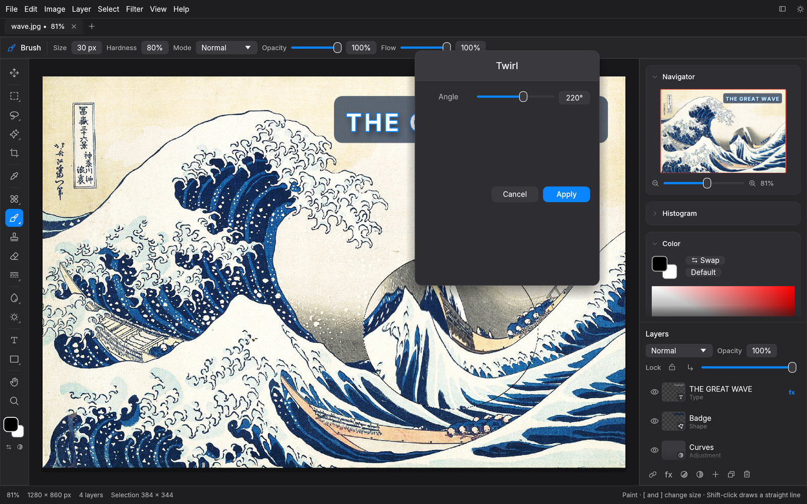
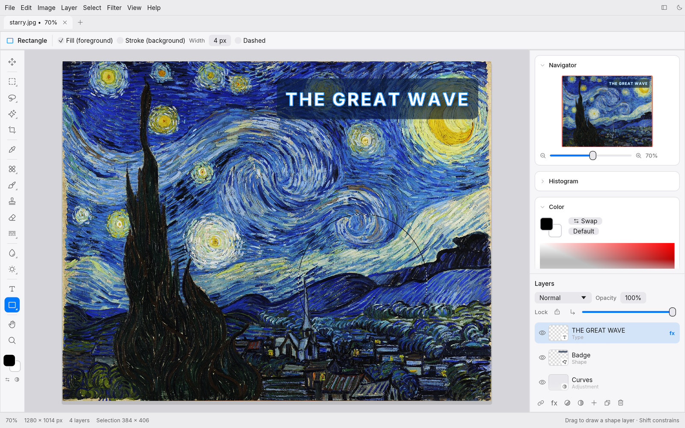
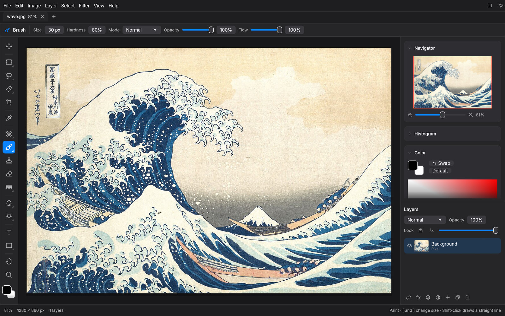
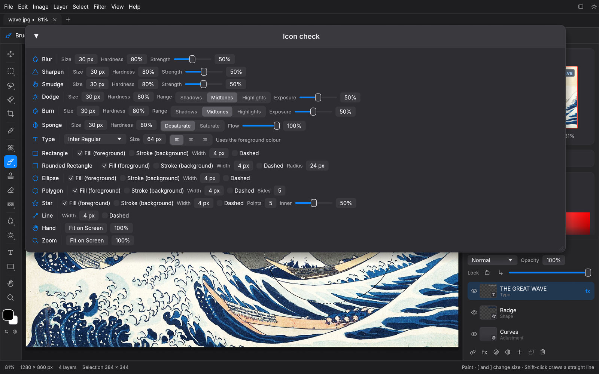

◎
Selections that think
Marquee, lasso, magic wand, quick selection, Color Range and Select Subject. Feather, expand, contract, border and smooth.
Free · Open source · macOS, Windows & Linux
Layers, masks, adjustment layers, layer styles, smart selections and 30 filters, in a native app that opens in an instant and works offline.

The Great Wave off Kanagawa, Katsushika Hokusai, c. 1831. Public domain.
Non-destructive
Stack Curves, Levels, Hue/Saturation, Color Balance, Black & White, Gradient Map and ten more as live adjustment layers. Mask them, reorder them, switch them off. Your original pixels never change.

Live preview
Every filter and adjustment previews right on the canvas, limited to your selection. Blur, sharpen, denoise, twirl, ripple, oil paint, halftone, vignette, lens flare and more.

Marquee, lasso, magic wand, quick selection, Color Range and Select Subject. Feather, expand, contract, border and smooth.
Drop and inner shadow, outer and inner glow, stroke and color overlay, live on any layer, including type.
Brush, pencil, clone stamp, healing and spot healing, smudge, dodge, burn and sponge, with pressure support.
Editable text with bundled fonts. Rectangles, rounded rectangles, ellipses, polygons, stars and lines as shape layers.
Open layered Photoshop documents and save them back. Projects save losslessly as .pstudio.
A visual History panel lets you jump to any step. Copy-on-write layers keep it light on memory.
Familiar by design
Shortcuts where your hands expect them: V, M, L, W, C, I, J, B, S, E, G, T, U, H, Z, plus ⌘J, ⌘E, ⌘T and ⇧⌘I.

For automation
The same engine runs headless. Batch-resize a folder, auto-tone a shoot or sharpen for the web in one line.
$ photo-studio-cli photo.jpg --adjust autotone --filter unsharp=80,1.5 -o out.jpg
$ photo-studio-cli batch ./shoot --out-dir ./web --format webp --resize 1600
✓ IMG_0412.jpg → web/IMG_0412.webp
✓ IMG_0413.jpg → web/IMG_0413.webp
48 of 48 doneFree and open source under the MIT license.
On macOS, right-click the app and choose Open the first time. All releases · Source